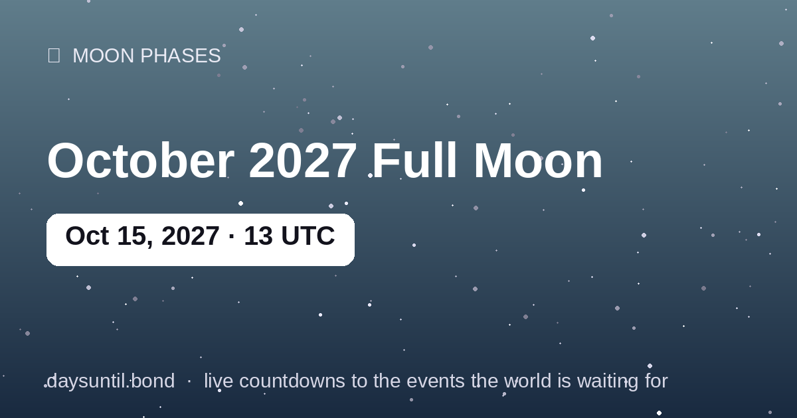

How Many Days Until October 2027 Full Moon?
October 2027 Full Moon falls on Friday, October 15, 2027.
As of November 22, 2026: 327 days to go — 46 weeks and 5 days, 235 weekdays (92 weekend days), about 7,848 hours.

Quick facts
| Peak (UTC) | October 15, 2027 · 13:48 |
|---|---|
| Zodiac position | 21°59' Aries |
| Moon phase | Full Moon (100% illumination) |
| Cycle | Lunation ~29.5 days |
About October 2027 Full Moon
The October 2027 full moon peaks at 13:48 UTC on October 15, 2027, at 21°59' Aries in the tropical zodiac. Full moons always rise at sunset and set at sunrise, so the best viewing is any time the Moon is up that night — no equipment needed.
In astrology, the full moon in Aries is considered the month's closing chapter: what began at the Aries new moon six months earlier reaches fullness, and what is no longer working becomes impossible to ignore. Monthly full moons are the sky's built-in review meetings.
Your October 2027 Full Moon countdown milestones
It is easier to plan against fixed points than against a number that moves. These are the dates on which the countdown to October 2027 Full Moon passes each marker between now and the day itself — the last one falls on Thursday 14 October, when there will be 1 day left.
| Milestone | Day | Date | Remaining |
|---|---|---|---|
| 200 days | Monday | 29 March 2027 | 200 days to go |
| 100 days | Wednesday | 07 July 2027 | 100 days to go |
| 50 days | Thursday | 26 August 2027 | 50 days to go |
| 30 days | Wednesday | 15 September 2027 | 30 days to go |
| 14 days | Friday | 01 October 2027 | 14 days to go |
| 7 days | Friday | 08 October 2027 | 7 days to go |
| 3 days | Tuesday | 12 October 2027 | 3 days to go |
| 1 days | Thursday | 14 October 2027 | 1 day to go |
How the remaining time breaks down
327 days is the headline, but it is rarely the number that helps. 235 of those are weekdays and 92 fall on a weekend, which is the split that matters if you are planning around work. It is 46 weeks and 5 days, or roughly 10.7 months, or about 7,848 hours.
| Unit | Until October 2027 Full Moon |
|---|---|
| Days | 327 |
| Weeks | 46 weeks and 5 days |
| Months (approx) | 10.7 |
| Weekdays | 235 |
| Weekend days | 92 |
| Hours | 7,848 |
| Sleeps | 327 |
Working days are Monday to Friday and do not subtract public holidays, which vary by country and employer — the full month-by-month split is on our weekday page for October 2027 Full Moon.